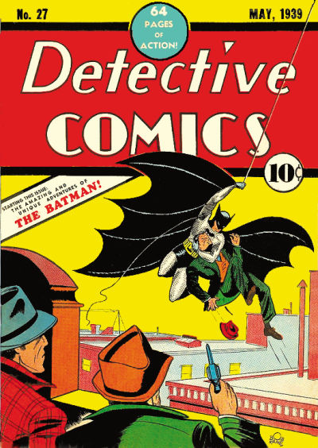
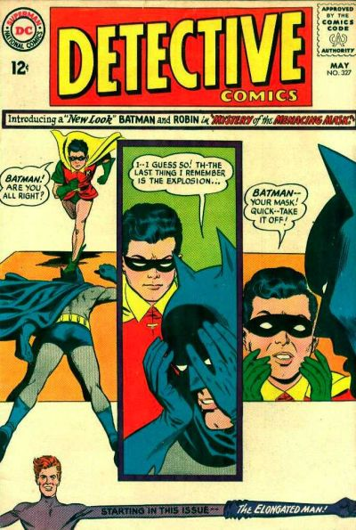
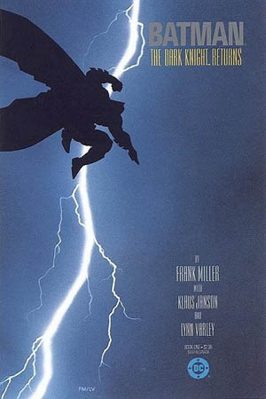

In early 1939, the success of Superman in Action Comics prompted editors at the comic book division of National Publications (the future DC Comics) to request more superheroes for its titles. In response, Bob Kane created "the Bat-Man".Collaborator Bill Finger recalled that "Kane had an idea for a character called 'Batman,' and he'd like me to see the drawings. I went over to Kane's, and he had drawn a character who looked very much like Superman with kind of ... reddish tights, I believe, with boots ... no gloves, no gauntlets ... with a small domino mask, swinging on a rope. He had two stiff wings that were sticking out, looking like bat wings. And under it was a big sign ... BATMAN".The bat-wing-like cape was suggested by Bob Kane, inspired as he was by Leonardo Da Vinci's sketch of an ornithopter flying device as a child.
he first Batman story, "The Case of the Chemical Syndicate", was published in Detective Comics #27 (May 1939). Finger said, "Batman was originally written in the style of the pulps", and this influence was evident with Batman showing little remorse over killing or maiming criminals. Batman proved a hit character, and he received his own solo title in 1940, while continuing to star in Detective Comics.

By 1964, sales on Batman titles had fallen drastically. Bob Kane noted that, as a result, DC was "planning to kill Batman off altogether".In response to this, editor Julius Schwartz was assigned to the Batman titles. He presided over drastic changes, beginning with 1964's Detective Comics #327 (May 1964), which was cover-billed as the "New Look". Schwartz introduced changes designed to make Batman more contemporary, and to return him to more detective-oriented stories. He brought in artist Carmine Infantino to help overhaul the character. The Batmobile was redesigned, and Batman's costume was modified to incorporate a yellow ellipse behind the bat-insignia

Frank Miller's limited series The Dark Knight Returns (February–June 1986), which tells the story of a 55-year-old Batman coming out of retirement in a possible future, reinvigorated the character. The Dark Knight Returns was a financial success and has since become one of the medium's most noted touchstones.The series also sparked a major resurgence in the character's popularity
In September 2011, DC Comics' entire line of superhero books, including its Batman franchise, was canceled and relaunched with new #1 issues as part of The New 52 reboot. Bruce Wayne is the only character to be identified as Batman and is featured in Batman, Detective Comics, Batman and Robin, and Batman: The Dark Knight.